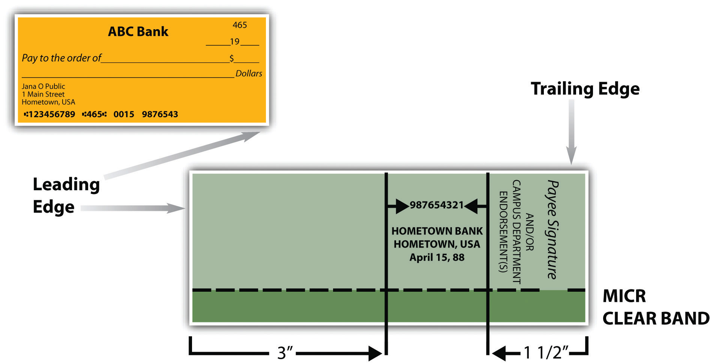
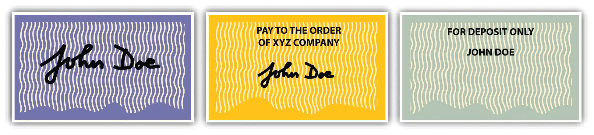

Most commonly, paper is transferred by indorsement. The indorsement is evidence that the indorser intended the instrument to move along in the channels of commerce. An indorsementThe act of a payee, drawee, accommodation party, indorser, or holder of an instrument in writing his name on the back of same with the intention of negotiating it. is defined by UCC Section 3-204(a) as
a signature, other than that of a signer as maker, drawer, or acceptor, that alone or accompanied by other words is made on an instrument for the purpose of (i) negotiating the instrument, (ii) restricting payment of the instrument, or (iii) incurring indorser’s liability on the instrument, but regardless of the intent of the signer, a signature and its accompanying words is an indorsement unless the accompanying words, terms of the instrument, place of the signature, or other circumstances unambiguously indicated that the signature was made for a purpose other than indorsement.
Indorse (or endorse) literally means “on the back of,” as fish, say, have dorsal fins—fins on their backs. Usually indorsements are on the back of the instrument, but an indorsement could be on a piece of paper affixed to the instrument. Such an attachment is called an allongeA piece of paper firmly affixed to an instrument.—it comes along with the instrument (UCC, Section 3-204(a)).
There are rules about where indorsements are placed. The Expedited Funds Availability Act was enacted in 1987 by Congress to standardize holding periods on deposits made to commercial banks and to regulate institutions’ use of deposit holds—that is, how soon customers can access the money after they have deposited a check in the bank. The Federal Reserve Board subsequently adopted “Regulation CC, Check Endorsement Standards” to improve funds availability and expedite the return of checks. See Figure 23.3 "Indorsement Standard".
Figure 23.3 Indorsement Standard
From UC Irvine Administrative Policies & Procedures, Business and Financial Affairs, Financial Services, Sec. 704-13: Check Endorsement Procedures, at http://www.policies.uci.edu/adm/procs/700/704-13.html.
As shown in Figure 23.3 "Indorsement Standard", specific implementing guidelines define criteria for the placement, content, and ink color of endorsement areas on the back of checks for the depositary bank (bank of first deposit), subsequent indorsers (paying banks), and corporate or payee indorsers. Indorsements must be made within 1½ inches of the trailing (left) edge of the back of the check; remaining space is for bank indorsements. There is no penalty for violating the standard—it is a guideline. The abbreviation “MICR” stands for magnetic ink character recognition. The “clear band” is a section of the back of the check that is not supposed to be intruded upon with any magnetic (machine-readable) printing that would interfere with machine reading on the front side (the bank routing numbers).
Sometimes an indorser adds words intended to strengthen the indorsement; for example, “I hereby assign all my right, title, and interest in this note to Carl Carpenter.” Words of assignment such as these and also words of condition, waiver, guaranty, limitation, or disclaimer of liability do not negate the effect of an indorsement.
When the instrument is made payable to a person under a misspelled name (or in a name other than his own), he may indorse in the wrong name or the right one or both. It is safer to sign in both names, and the purchaser of the instrument may demand a signature in both names (UCC, Section 3-204(d)).
A holder can indorse in a variety of ways; indorsements are not identical and have different effects.
If the instrument requires a signature, transfer without indorsement is an assignment only. Bearer paper does not require indorsement, so it can be negotiated simply by delivering it to the transferee, who becomes a holder. The transferor has no contract liability on the instrument, however, because he has not signed it. He does remain liable on the warranties, but only to the person who receives the paper, not to subsequent transferees.
Because it is common practice for a depository bank (the bank into which a person makes a deposit) to receive unindorsed checks under so-called lockbox agreements from customers who receive a high volume of checks, a customer who is a holder can deposit a check or other instrument for credit to his account without indorsement. Section 4-205(1) of the UCC provides that a “depositary bank becomes a holder…at the time it receives the item for collection if the customer at the time of delivery was a holder, whether or not the customer indorses the item.”
To be effective as negotiation, an indorsement must convey the entire instrument. An indorsement that purports to convey only a portion of the sum still due amounts to a partial assignment. If Rackets’ agent signs the check “Rackets, Inc.” together with the words “Pay half to City Water, /s/ Agent” and delivers the check to City Water, that does not operate as an indorsement, and City Water becomes an assignee, not a holder.
A blank indorsementIndorsement of a check or other negotiable paper without naming a further indorsee (usually simply the indorser’s name). consists of the indorser’s signature alone (see Figure 23.4 "Forms of Endorsement", left). A blank indorsement converts the instrument into paper closely akin to cash. Since the indorsement does not specify to whom the instrument is to be paid, it is treated like bearer paper—assuming, of course, that the first indorser is the person to whom the instrument was payable originally. A paper with blank indorsement may be negotiated by delivery alone, until such time as a holder converts it into a special indorsement (discussed next) by writing over the signature any terms consistent with the indorsement. For example, a check indorsed by the payee (signed on the back) may be passed from one person to another and cashed in by any of them.
Figure 23.4 Forms of Endorsement
A blank indorsement creates conditional contract liability in the indorser: he is liable to pay if the paper is dishonored. The blank indorser also has warranty liability toward subsequent holders.
A special indorsementIndorsement that names the transferee-holder., sometimes known as an “indorsement in full,” names the transferee-holder. The payee of a check can indorse it over to a third party by writing “Pay to the order of [name of the third party]” and then signing his name (see Figure 23.4 "Forms of Endorsement", center). Once specially indorsed, the check (or other instrument) can be negotiated further only when the special indorsee adds his own signature. A holder may convert a blank indorsement into a special indorsement by writing above the signature of the indorser words of a contractual nature consistent with the character of the instrument.
So, for example, Lorna Love’s check to Rackets, Inc., indorsed in blank (signed by its agent or stamped with Rackets’ indorsement stamp—its name alone) and handed to City Water, is not very safe: it is bearer paper. If the check fell onto the floor, anybody could be a holder and cash it. It can easily be converted into a check with special indorsement: City Water’s clerk need only add the words “Pay City Water” above Rackets’ indorsement. (The magic words of negotiability—“pay to order of bearer”—are not required in an indorsement.) Before doing so, City Water could have negotiated it simply by giving it to someone (again, a blank indorsement acts as bearer paper). After converting it to a special indorsement, City Water must indorse it in order to transfer it by negotiation to someone else. The liabilities of a special indorser are the same as those of a blank indorser.
The dichotomy here of indorsement in blank or special indorsement is the indorser’s way of indicating how the instrument can be subsequently negotiated: with or without further indorsing.
A restrictive indorsementIndorsement specifying the use to which an instrument may be put; most common is “For deposit only.” attempts to limit payment to a particular person or otherwise prohibit further transfer or negotiation. We say “attempts to limit” because a restrictive indorsement is generally invalid. Section 3-206(a) of the UCC provides that an attempt to limit payment to a particular person or prohibit further transfer “is not effective.” Nor is “[a]n indorsement stating a condition to the right of the indorsee to receive payment”; the restriction may be disregarded. However, two legitimate restrictive indorsements are valid: collection indorsements and trust indorsements. Wisner Elevator Company, Inc. v. Richland State Bank (Section 23.4 "Cases") deals with conditional and restrictive indorsements.
It is very common for people and businesses to mail checks to their bank for deposit to their accounts. Sometimes mail goes astray or gets stolen. Surely it must be permissible for the customer to safeguard the check by restricting its use to depositing it in her account. A collection indorsementIndorsement restricting payment to collection or deposit., such as “For deposit” or “For collection,” is effective. Section 3-206(c) of the UCC provides that anybody other than a bank who purchases the instrument with such an indorsement converts the instrument—effectively steals it. A depositary bank that takes it must deposit it as directed, or the bank has converted it. A payor bank that is also the depositary bank that takes the instrument for immediate payment over the counter converts it: the check cannot be cashed; it must be deposited (see Figure 23.4 "Forms of Endorsement").
To illustrate, suppose that Kate Jones indorses her paycheck “For deposit only, Kate Jones,” which is by far the most common type of restrictive indorsement (see Figure 23.4 "Forms of Endorsement", right). A thief steals the check, indorses his name below the restrictive indorsement, and deposits the check in Last Bank, where he has an account, or cashes it. The check moves through the collection process to Second Bank and then to First Bank, which pays the check. Kate has the right to recover only from Last Bank, which did not properly honor the indorsement by depositing the payment in her account.
A second legitimate restrictive indorsement is indorsement in trust, called a trust indorsementAn indorsement to a person who is to hold or use the funds for the benefit of the indorser or a third party. (sometimes agency indorsement). Suppose Paul Payee owes Carlene Creditor a debt. Payee indorses a check drawn to him by a third party, “Pay to Tina Attorney in trust for Carlene Creditor.” Attorney indorses in blank and delivers it to (a) a holder for value, (b) a depository bank for collection, or (c) a payor bank for payment. In each case, these takers can safely pay Attorney so long as they have no notice under Section 3-307 of the UCC of any breach of fiduciary duty that Attorney may be committing. For example, under Section 3-307(b), these takers have notice of a breach of trust if the check was taken in any transaction known by the taker to be for Attorney’s personal benefit. Subsequent transferees of the check from the holder or depositary bank are not affected by the restriction unless they have knowledge that Attorney dealt with the check in breach of trust (adapted from UCC, Section 3-206, Official Comment 4). (Of course Attorney should not indorse in blank; she should indorse “Tina Attorney, in trust for Carlene Creditor” and deposit the check in her trust account.)
The dichotomy here between restrictive and unrestrictive indorsements is the indorser’s way of showing to what use the instrument may be put.
An indorser might want to condition the negotiation of an instrument upon some event, such as “Pay Carla Green if she finishes painting my house by July 15.” Such a conditional indorsementIndorsement that makes instrument’s payment dependent on the occurrence of some event specified in the indorsement; generally invalid. is generally ineffective: the UCC, Section 3-206(b), says a person paying for value can disregard the condition without liability.
An indorser can limit his liability by making a qualified indorsementWording designed to limit the indorser’s contract liability; “without recourse” is the most frequently seen example.. The usual qualified indorsement consists of the words “without recourseLanguage used in a qualified indorsement to limit indorser’s contract liability.,” which mean that the indorser has no contract liability to subsequent holders if a maker or drawee defaults. A qualified indorsement does not impair negotiability. The qualification must be in writing by signature on the instrument itself. By disclaiming contract liability, the qualified indorser also limits his warranty liabilities, though he does not eliminate them. Section 3-415(a) of the UCC narrows the indorser’s warranty that no defense of any party is good against the indorser. In its place, the qualified indorser warrants merely that he has no knowledge of any defense.
“Without recourse” indorsements can have a practical impact on the balance sheet. A company holding a promissory note can obtain cash by discounting it—indorsing it over to a bank for maturity value less the bank’s discount. As an indorser, however, the company remains liable to pay the amount to subsequent holders should the maker default at maturity. The balance sheet must reflect this possibility as a contingent liability. However, if the note is indorsed without recourse, the company need not account for any possible default of the maker as a contingent liability.
The dichotomy here between qualified and unqualified indorsements is the indorser’s way of indicating what liability she is willing to incur to subsequent holders.
An indorsement is, usually, the signature of an instrument’s holder on the back of the instrument, indicating an intention that the instrument should proceed through the channels of commerce. The Federal Reserve Board has recommendations for how instruments should be indorsed to speed machine reading of them. Indorsements are either blank or special; they are either restrictive or nonrestrictive; and they are either qualified or unqualified. These pairings show the indorser’s intention as to how further negotiation may be accomplished, to what uses the instrument may be put, and what liability the indorser is willing to assume.